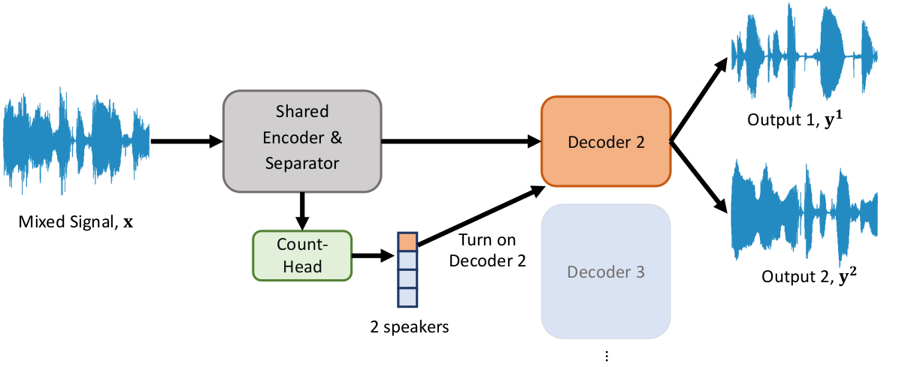

Multi-Decoder DPRNN: High Accuracy Source Counting and Separation

Abstract: We propose an end-to-end trainable approach to single-channel speech separation with unknown number of speakers, only training a single model for arbitrary number of speakers. Our approach extends the MulCat source separation backbone with additional output heads: a count-head to infer the number of speakers, and decoder-heads for reconstructing the original signals. Beyond the model, we also propose a metric on how to evaluate source separation with variable number of speakers. Specifically, we cleared up the issue on how to evaluate the quality when the ground-truth hasmore or less speakers than the ones predicted by the model. We evaluate our approach on the WSJ0-mix datasets, with mixtures up to five speakers. We demonstrate that our approach outperforms state-of-the-art in counting the number of speakers and remains competitive in quality of reconstructed signals.
Example Input & Output
Input(Mixture, 2 sources):
Output(2 Estimated Sources)
Input(Mixture, 3 sources):
Output(3 Estimated Sources)
Input(Mixture, 4 sources):
Output(4 Estimated Sources)
Input(Mixture, 5 sources):
Output(5 Estimated Sources)
Publications
Zhu, J., Yeh, R. A., & Hasegawa-Johnson, M. (2021). Multi-Decoder Dprnn: Source Separation for Variable Number of Speakers. ICASSP 2021 - 2021 IEEE International Conference on Acoustics, Speech and Signal Processing (ICASSP), 3420–3424. doi:10.1109/ICASSP39728.2021.9414205 [BibTeX]
Contact
Email the author if you have any question